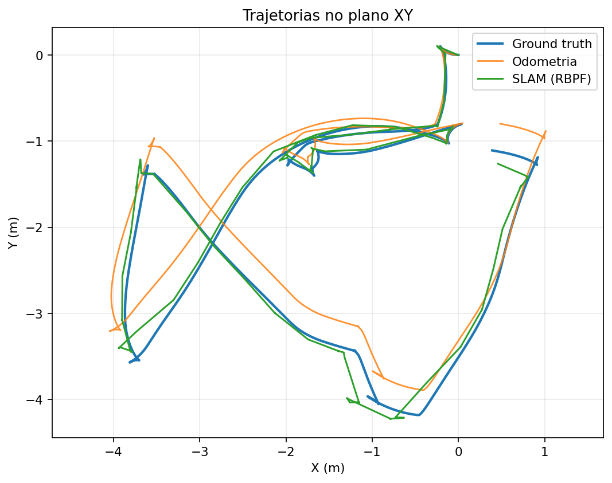
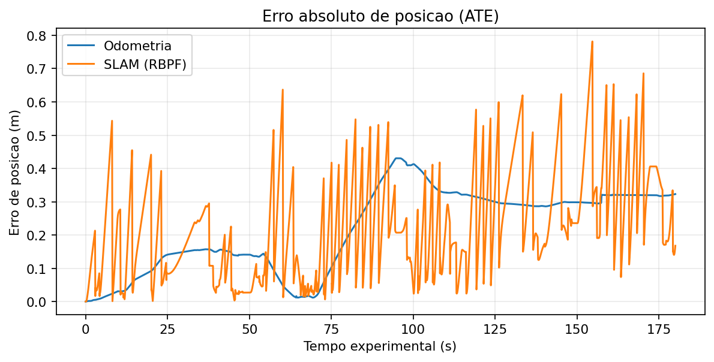
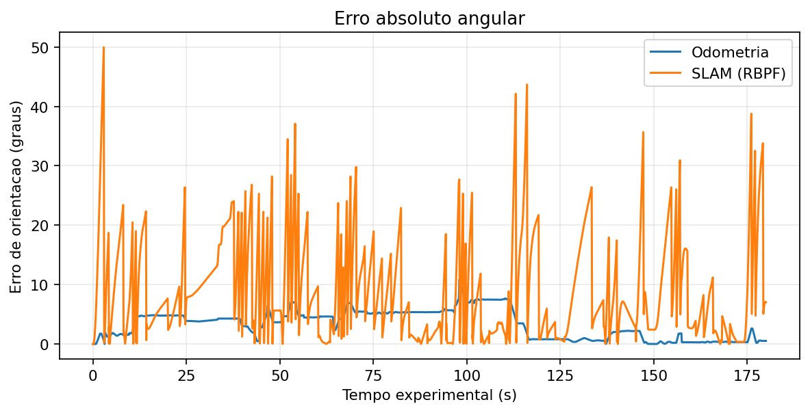
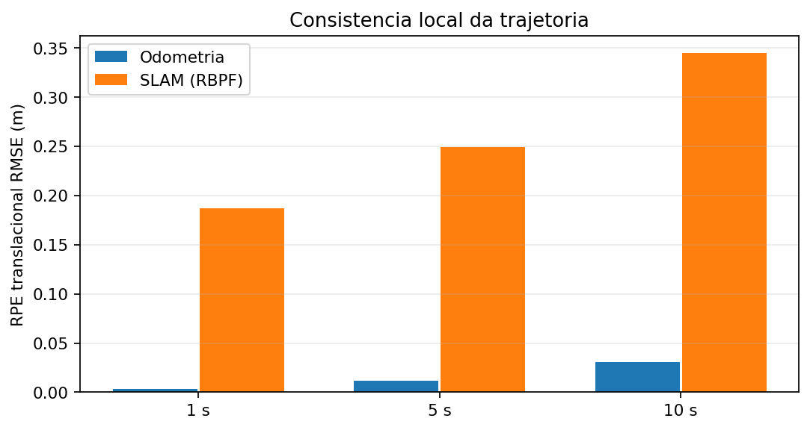
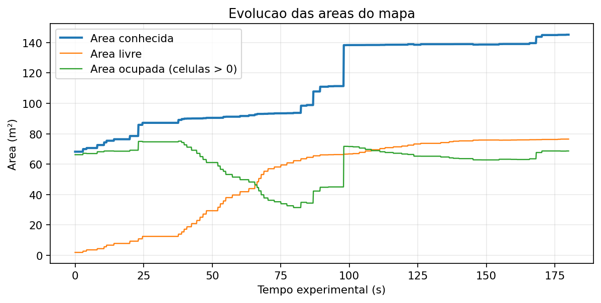
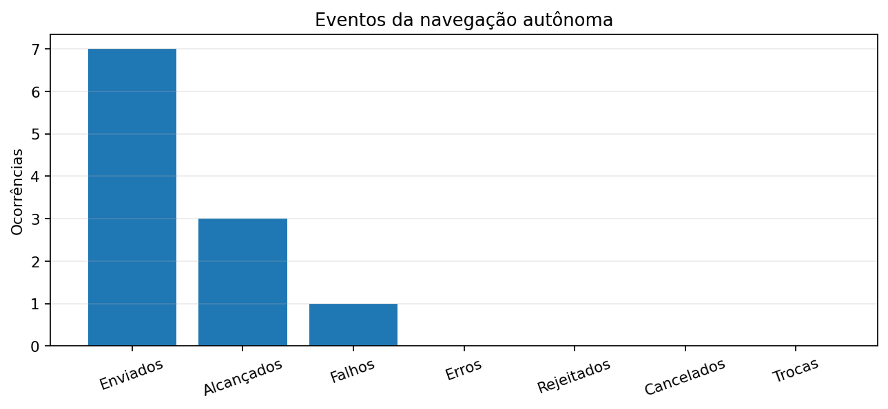
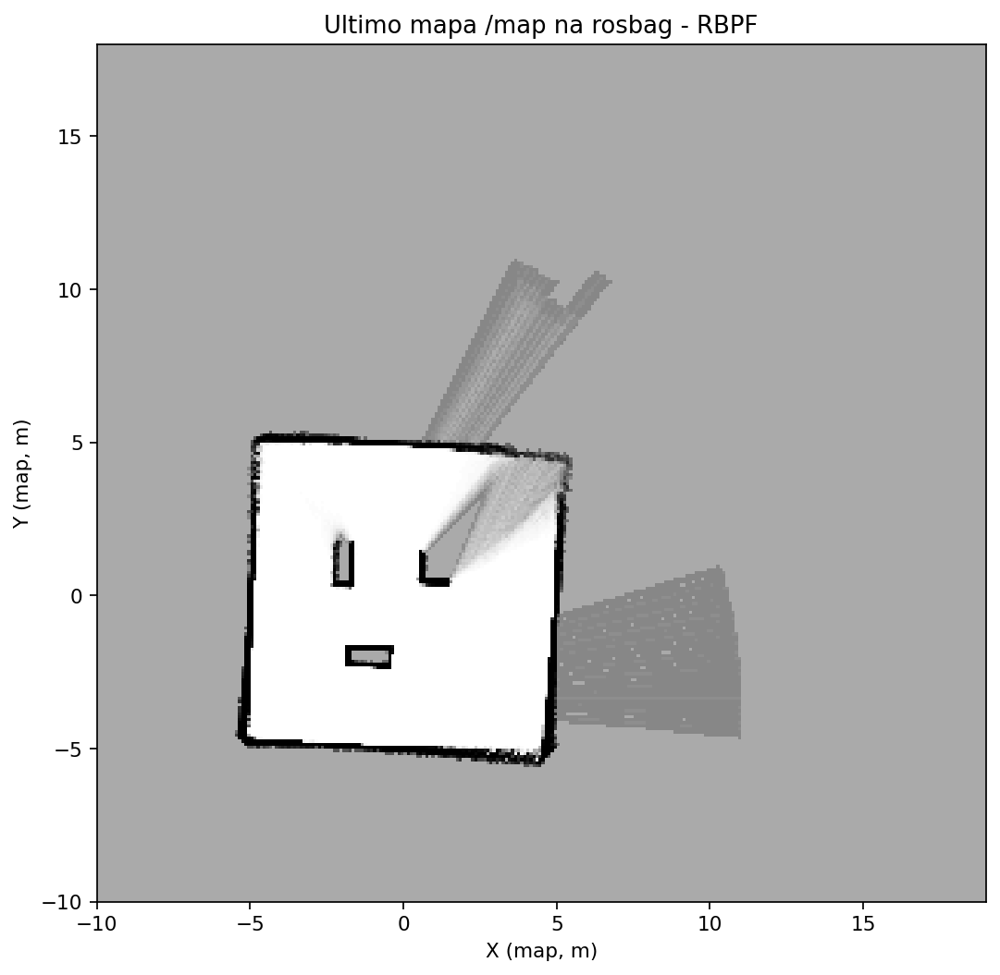

Como interpretar
A estimativa SLAM é reconstruída de map→odom→base_link. As trajetórias são comparadas após alinhamento inicial SE(2). O mapa final provém da mensagem /map e pode diferir da aparência do RViz2 se o RViz2 estiver exibindo outro Fixed Frame, camadas ou marcadores. A ausência de uma métrica não deve ser interpretada como valor zero.
Último mapa registrado em t=208.20 s (relógio absoluto); referencial map.
Trajetórias
Compara o percurso de referência com a odometria e a estimativa global do método SLAM, após alinhamento inicial SE(2).

Evolução do erro de posição
Indica em quais instantes a estimativa se afasta da referência; valores menores são preferíveis.

Evolução do erro angular
Mostra desvios de orientação que podem influenciar a projeção de varreduras e a navegação.

Erro relativo de trajetória (RPE)
Compara a precisão dos deslocamentos relativos em janelas de 1, 5 e 10 segundos. Valores menores indicam maior consistência local.

Evolução do mapeamento
A área conhecida indica quanto do ambiente foi observado. A curva não mede diretamente a precisão geométrica do mapa.

Objetivos de navegação
Distingue metas alcançadas, falhas, rejeições, cancelamentos voluntários e trocas de destino. Cancelamentos voluntários não são falhas.

Mapa de ocupação final
Imagem gerada da última mensagem /map disponível na rosbag: branco = livre, preto = ocupado, cinza = desconhecido. Não é uma captura da interface do RViz2.
